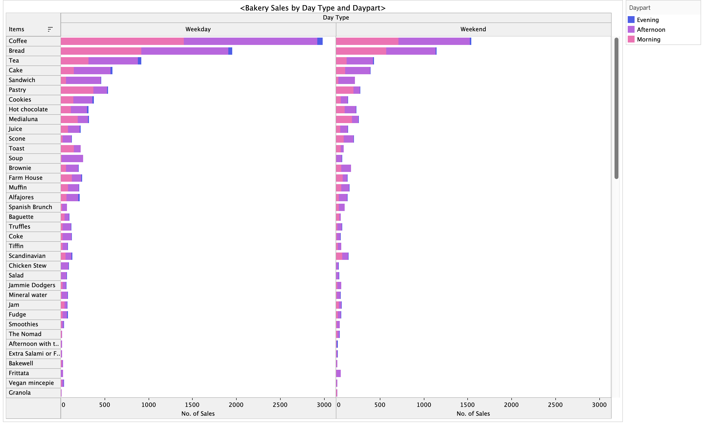

This is a good mapping because it more clearly demonstrates the proportion of states that would vote Democratic to the states that would vote Republican.
Color
Represents a categorical attribute.
This is a good mapping because the color and patterns denote very clear categories in the data.
Position
Represents a categorical attribute
This is a good mapping because for the most part, the positioning of the states reflects geographical location.
Colormaps
Categorical Colormap
Represents Categorical Attribute
This is a good mapping because the colors coincide with connotational social norms. We often categorize Democrats as blue and Republicans as red.
Marks
Points
Lines
Channels
Color
Represents an ordered quantative attribute
This is a good mapping because the color scale being divergent best demonstrate the continuous scale of scoring values.
Position
Represents ordered quantative attribute
This is a good mapping because both the launch angle and velocity is denoted by the point's placement on the x and y axis.
Colormaps
Divergent Colormap
Represents an ordered quantative attribute
This is a good mapping because the divergence represents two extremes of a range of values.

Marks
Lines
Channels
Position
Represents ordered attributes
This is a good mapping because the vertical positions represent a subtle aspect of information, the lines are ordered by number of sales.
Length
Represents ordered attributes
This is a good mapping because the horizontal lengths demonstrate how much of something there is.
Color
Represents a categorical attribute
This is a good mapping because it adds an additional level of understaanding by representing a new category.
Colormaps
Categorical Colormap
Represents categorical attributes
This is a good mapping because the distinct category of dayparts would not be otherwise represented.